You can adjust the width and height of table rows, manage numbering, grouping, etc. To access the settings in the app form settings, select the desired field and click Table Settings.
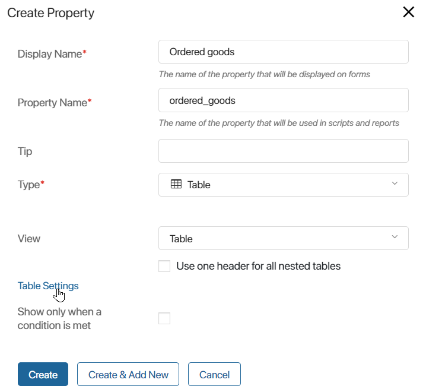
General settings
General settings are applied to the whole table. You can adjust the width and height of table rows, manage numbering, grouping, or sorting of rows, as well as hide or display columns’ headers and footers. Let’s see how these options work:
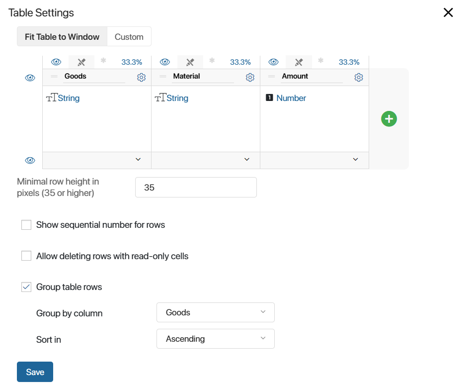
- Fit Table to Window or Custom. Select Fit Table to Window if you want the table to stretch across the width of the page. Column sizes will be percentages of the total table’s width. Select Custom to set a fixed pixel width for each column. The total width of the table will equal the sum of the column sizes.
- Minimum row height in pixels (35 or higher). To align the table, set the height of its rows. The minimum value is 35 pixels.
- Show sequential number for rows. A column for the row’s number will appear in the table. Numbers will be filled out automatically.
- Allow deleting rows with read-only cells. Enable this option to let users remove rows even if the table includes read-only columns. Let’s say there are read-only cells in the Order details table. These are the cells that data from the Orders app is passed to. The rest of the data in the table is entered by the sales rep. If the option is enabled, the sales rep will be able to delete a row in the table, for example, if the data is incorrect.
- Group table rows. This option allows structuring data in the table and displaying it in a more convenient way.
- In the Group by column field, specify the column that rows need to be grouped by.
- Use the Sort in option to place groups of cells in ascending or descending order. If you group items based on a String type field, items will be sorted alphabetically.
Note that if the Sorting option is enabled for a column, you are not allowed to group rows. In the notification that appears, select the option that you want to keep.
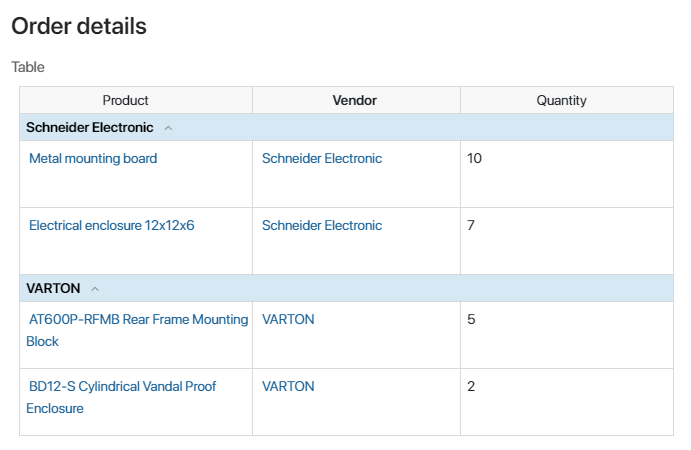
Column settings
For each column, you can set:
Width
Depending on the Fit Table to Window/Custom option, a column’s size is set either as a percentage of the table’s width or in pixels. To set the custom column width, drag the column’s border.
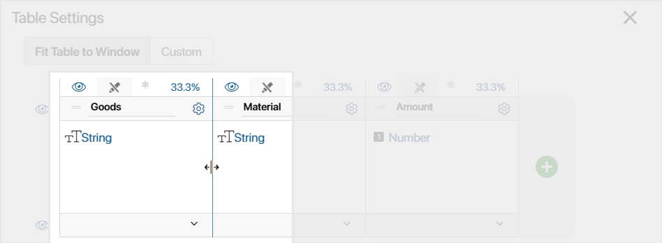
A column’s width can also change automatically to match the width of its content. To enable this option, click the value of the column’s width and select one of the following options:
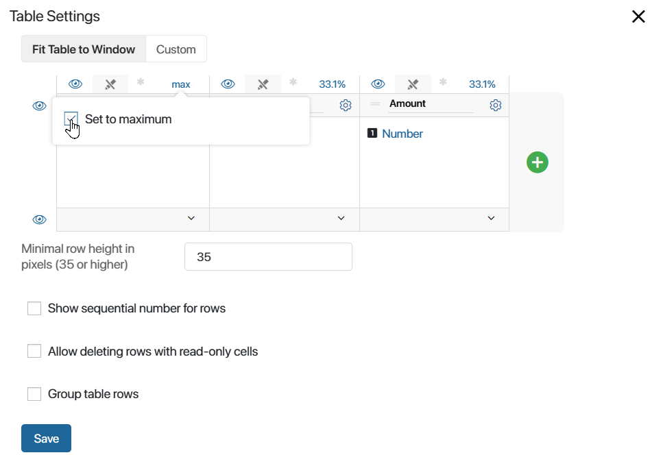
- Set to maximum. This setting is available when the Fit Table to Window option is selected. The column will be as wide as possible, limited by the width of other columns. When you select this option, the width’s value will change to max.
- Set to minimum. This setting is available when the Custom option is selected. The column’s width will be equal to the size of the longest item in its cells. When you select this option, the width’s value will change to min.
Design
You can apply a background color to columns, change the text’s alignment or font color, and make it underlined, italic, or bold. To do that, click the gear icon next to a column’s name. In the pop-up window that opens, switch between different options to format text the way you want.
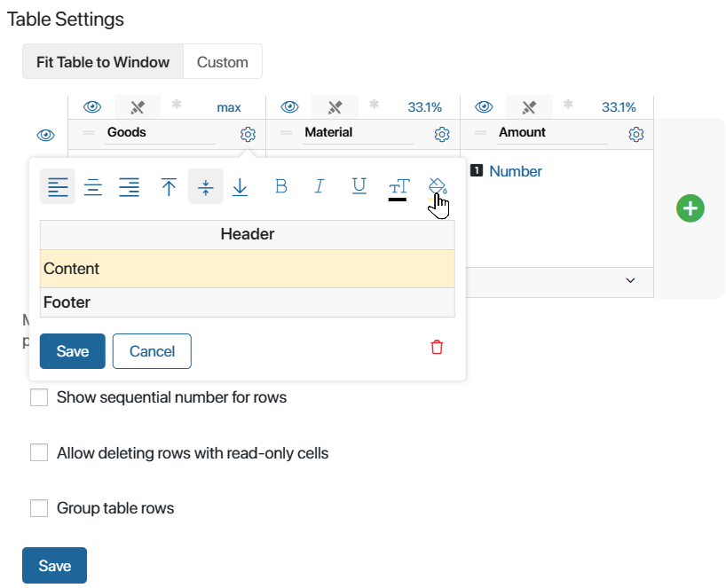
Visibility
You can hide the headers and footers of all the columns in the table. To do that, click the icon on the left of the table. To make a hidden element visible again, click .
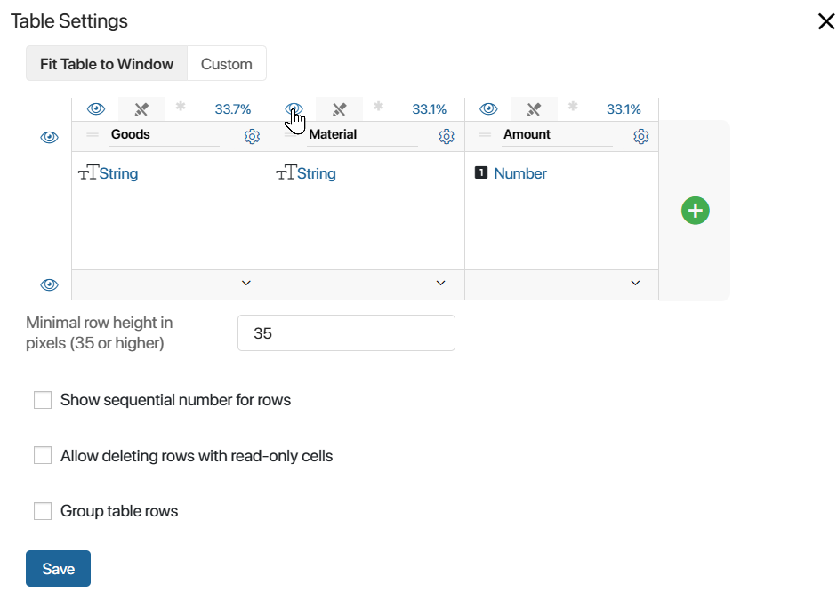
Read only and Required flags
To ensure that data in a column will not be changed, use the Read only option. To do that, click the  icon in the row above the column header. When a user works with the table, it will be impossible to edit cells in this column.
icon in the row above the column header. When a user works with the table, it will be impossible to edit cells in this column.
Important: By default, users cannot delete table rows if the table contains read-only columns. To change this, in the table settings, enable the Allow deleting rows with read-only cells option.
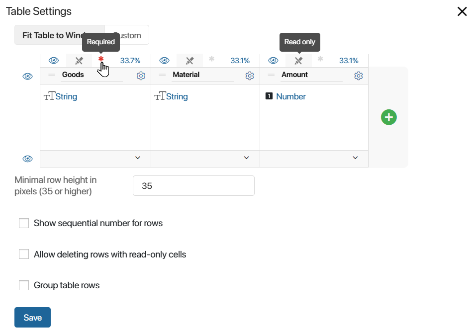
If calls in a column cannot be left empty, use the Required option. To do that, click the asterisk icon in the row above the column header. The icon color will change to red. Now when an employee works with the table, it will be impossible to save the changes without filling out cells in this column. To remove the Required flag, click the asterisk icon again.
Important: All empty cells in the column will need to be filled out.
Sorting
You can sort data in columns in ascending and descending order, as well as alphabetically. Sorting is only available for the following types of fields: Number, Date/Time, Money, String, Users, App, Phone number, Full Name, and Email address.
To enable sorting for a column, check the Sorting box when you create or edit it.
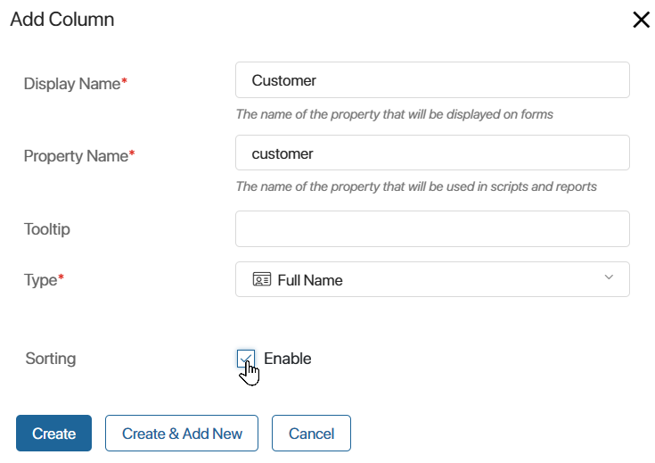
Note that sorting is not available if you use the Group table rows option. In the notification that appears, select the option you want to keep.
When you enable sorting, you can open an app item’s view form and click the corresponding column header. Cells will be sorted in the ascending order. If you click the header again, they will be sorted in descending order. Another click will reset the order of cells.
Column settings on forms and in the context
Column visibility, as well as the Read only and Required flags are configured differently on app forms, in interfaces, and in business process tasks. Let’s see how to change table settings in each case.
On a business process task form
Change the table settings in the following way:
- On the business process diagram, double-click a Task activity and open the Form tab.
- In the Name on Form column, select a Table type field.
- In the window that opens, go to the Columns display tab.
- Check boxes to enable or disable the following options:
- Hide a column: .
- Make cells in a column required:
 .
. - Make cells in a column read-only and restrict editing:
 .
.
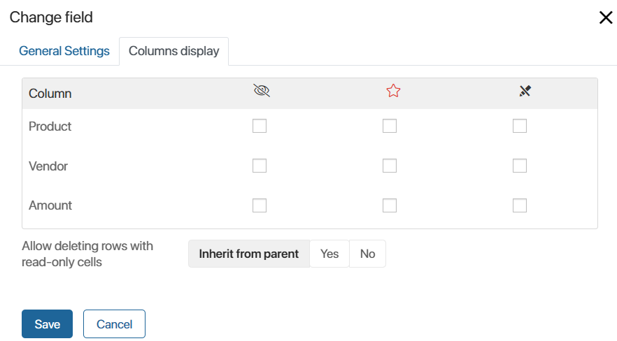
To let users delete rows in tables with read-only columns, enable the Allow deleting rows with read-only cells option in the table’s settings.
- Save the changes.
Important: The column settings you configure here only apply to the current task in the business process.
On the form of an app, widget, or page
If a Table type field is placed on the form of an app, a page, or a widget, you can configure columns as follows:
- Open the form template in the advanced mode.
- Select or add a Table type property to the form. To do that, drag it from the right-side panel.
- Click the gear icon in the property header.
- In the window that opens, go to the Display settings tab.
- Check boxes to enable or disable the following options:
- Hide a column: .
- Make cells in a column required: .
- Make cells in a column read-only and restrict editing: .
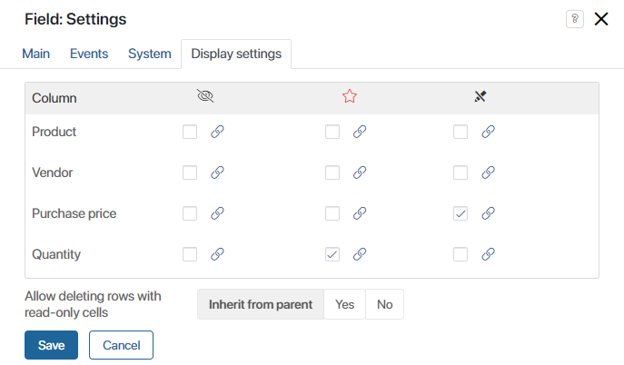
- Save the changes.
Important: These table settings are only applied on the form they are configured for. For example, if you hide certain columns of the table on the app create form, they will still be displayed on the view form.
Instead of checking boxes, you can select a context variable of the Yes/No switch type. To do that, click the  icon next to the checkbox you need. Select a variable from the list. The column settings will be turned on or off depending on the value of the bound variable.
icon next to the checkbox you need. Select a variable from the list. The column settings will be turned on or off depending on the value of the bound variable.
Example of binding column display settings to a variable
Let’s say you are keeping records of materials in the Stock app. In the app context, there is a Materials in stock property of the Table type, which stores information about the current stock of materials. You need to send the information to external customers, but without displaying the purchase price. To do this:
On the form that shows materials in stock, the External customer property will appear. If an employee selects it before sending the form, Purchase price will be hidden for the recipient. |
On an app’s form in the standard mode
In an app, you can also quickly change columns’ settings in the Form Settings window on the Create, View, and Edit tabs without having to open the interface designer. To do that:
- Click the gear icon on the right of the app name and select Form Settings.
- Go to the Create, View, or Edit tab.
- To change the settings of a Table type field, select it in the Context column on the left and drag it to the list of properties on the right.
- Click the field name in the Name on form column.
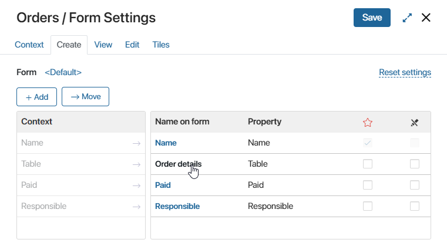
- In the window that opens, open the Columns display tab.
- Check boxes to enable or disable the following options:
- Hide a column: .
- Make cells in a column required: .
- Make cells in a column read-only and restrict editing: .
- Save the changes.
Found a typo? Select it and press Ctrl+Enter to send us feedback